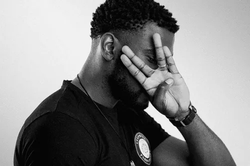

L'ascension et la consécration
Repéré par Booba pour la mixtape OKLM, son couplet sur Pinocchio le révèle au grand public. Son vécu fait la force de sa plume :
« Je crois que le dark c’est ma forme d’écriture »

Fan page · Rap francophone
Damso, de son vrai nom William Kalubi Mwamba, né le 10 mai 1992 à Kinshasa (RDC), est un rappeur et auteur-compositeur-interprète belgo-congolais.
Repéré par Booba pour la mixtape OKLM, son couplet sur Pinocchio le révèle au grand public. Son vécu fait la force de sa plume :
« Je crois que le dark c’est ma forme d’écriture »

Un extrait pour entrer dans l'univers.